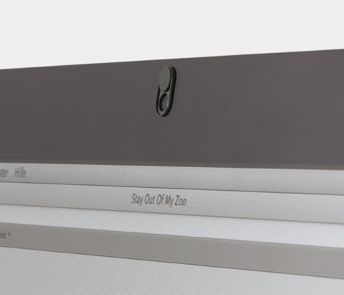

When you think of digital privacy, you think of digital solutions. You install a tracker blocker, you use different information in online forms and you look for privacy-friendly ways of communication. What you may never think of is that protection can be physical as well. Let's step away from the screen for a moment and see what's out there.
Recently, there have been reports that apps can use your microphone to listen and send this data away for analysis. That way, the theory goes, they can offer you items based on what you talk about. Although evidence of this is only circumstantial so far, researchers have managed to create a proof of concept for this functionality.
At the same time, the allegations your phone might be using audio from your surroundings were proven true. It was reported that smartphone apps listen to inaudible sounds that are placed in advertisements you visit. It was also shown that apps listen to what you watch on TV to deliver you more targeted ads.
To fight this, you often have to look towards technically complex solutions or decide to not use an app at all if they are strict about their permissions. It can all get a little overwhelming. I've already discussed adblockers as one way to get tracked less, but even then you rely on software. This time I decided to look at the area you can control better than anyone else: your physical space. By limiting physical availability to the source of information, you are in control.
Cover up your webcam

One of the easiest and most common physical measures of protecting yourself from prying eyes is to cover up your webcam. This can be done with either a piece of tape or a more advanced solution like a sliding cover.
Covering your webcam may seem like an extreme measure, because aren't the possibilities of your specific very low? While that's true, the results may be very harmful. Take the case of the Russian hackers who gained access to people's webcams and live-streamed them on YouTube. There's also a documented case of someone who got caught self-pleasuring and was asked for ransom on the captured images.
It's a threat with serious consequences. Much more may be learned from video footage other than your face. Your surroundings and any visitors are exposed as well. You might not even notice being spied on, as it's possible for hackers to do this without turning on the indicator light.
As I mentioned before, a piece of tape on the camera will suffice. Slate even did a review on the best tape to cover your webcam, although buying a cheap webcam cover may be a more elegant solution.
Get a privacy screen protector
One of humanity’s favourite activities is snooping. Whether it’s glancing over at your neighbour’s desk or checking out the person in the train seat next to you, snooping is easily done. Whenever it involves a peek at someone else's screen, we call it shoulder surfing.
To guarantee privacy from shoulder surfers you can look for a privacy screen protector. It’s essentially a thin cover for your screen that drastically reduces the viewing angle of your screen.
With a privacy screen protector installed, looking at your screen straight-on gives you business as usual. Yet, when you look at it from any other angle than a narrow area in front, you'll see nothing but blackness. It's more difficult to have someone look with you at a video, but it does mean that nobody else can either. Most privacy guards are on work devices, protecting sensitive data from shoulder surfers.
There's an option for almost any type of device, from smartphones to desktop monitors. They come in two flavours: ones you can remove temporarily, making situational use possible, and ones you stick to the screen for a more permanent effect. Do your research before purchasing, because they aren’t cheap for large screens.
Remove sensitive devices from the room
This one feels rather obvious, but it's the cheapest and easiest solution. When you're afraid your mobile phone may be listening in on your conversations, what's easier than not having it on you at that moment?
It may create some inconveniences, but if you truly don't want to be listened on it's the most solid option. Turning on your device would protect you against most attacks, but there are limits to its feasibility.
The problem with this is that it's a rather drastic measure to take. I think that protecting your privacy by controlling the world around you should be that difficult. Instead of a computer with a built-in microphone and webcam, can't we have one where you can physically disconnect them with a switch? Or another solution that doesn't require a new device?
Looking ahead: the future of physical privacy
With the growing awareness of privacy, we see new ideas emerge in this space. There may yet be a future for physical privacy, because that's something only you have control over, regardless of the technical skills of the one tracking you. I found some solutions that are recently available or coming in the near future, but that are still new enough to not have a large market share.
Reflectacles: Facial recognition disturber
One interesting product is the reflective pair of glasses meant to mask your face on CCTV cameras: Reflectacles. Originally funded in 2016 through Kickstarter, there are now two options available. They reflect both infrared and visible lighting, turning your face into a white blob on camera.
The shiny glasses reflect both infrared and visible lighting, turning your face into a white blob on certain security cameras. And as an added benefit: you won't appear with squinted eyes on a surprise flash photograph either.
The overall product seems to require some further development as it stands now. The Reflectacles seem bulky and they still have a narrow use case, but also don't yet cover a lot of camera types. Perhaps future iterations can takes this into account and work on a solution that further protects from facial recognition.
With the growth of facial recognition technology, glasses such as these become more interesting for moving around outside the house. It's an interesting product to see developed, although it's sad that they have to exist in the first place. For now I'd say that unless you want to hop on the anti-recognition bandwagon early or if you plan to rob a house, I'd hold off on these for now.
Purism: Turn it off physically
The folks at Purism make privacy-friendly devices. They currently have a laptop product line, with a 2-in-1 tablet and a smartphone being added in the near future. Purism has been in this business relatively long compared to other companies, as they were founded in 2014. In 2015 they managed to successfully fun their $1 million Kickstarter, which resulted in their first privacy-friendly laptop.
Some notable features from their devices are the focus on open/libre software for all components and hardware kill switches for the wireless and Bluetooth as well as the microphone and camera. This philosophy is translated to their tablet and smartphone products as well.
While Purism will most likely not see mass appeal due to their Linux operating system, it's definitely a producer of niche products that appear to generate enough customers. If you're interested in this sort of thing, it's worth keeping an eye on.
Specter Case: Privacy phone cases
While disconnecting your phone's microphone and camera with a physical switch sounds great, it may not be the most sensible option to buy a new one just for that. In comes the Specter phone case (note March 2019: their website is offline).
This phone case has been designed to physically block access to your phone's microphone and camera. The product immediately piqued my interest, although it will be a while before you'll be able to hold it in your hands.
I expect that aftermarket solutions such as the Specter case will become more common. We already see them in the privacy screen protectors and webcam sliders, but this goes a step beyond that.
The Specter Case will launch its Kickstarter soon, with only cases for the iPhone for now. It'll be interesting to keep an eye on how well they do and how well their phone cases work.
Closing thoughts
Physical measures to protect your digital privacy appears to be an emerging field at the moment. Consumer demand for privacy is still a rather new issue, with most solutions being ‘easy’ digital fixes. With increased consumer awareness and more pervasive data collection methods, I think that new solutions are inevitable. I'm definitely looking forward to see new and creative products in this space.
Are there any solutions you would like to try? Or do you know of any physical measures I've missed? Share it below.


Comments
Enabling comments requires your consent for Disqus to place cookies. You can review their privacy policy here.